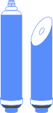
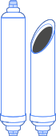

Чистая вода с
минералами
сразу из под крана
- 2 вида подачи воды
- Бесплатная доставка
- Установка ПОД КЛЮЧ
Внимание!
Чем опасна вода из под крана
Почему мы называем
нашу систему заводом
Для литья корпусов и других пластиковых элементов фильтра используется исключительно новое первичное сырье без вредных добавок, что обеспечивает немецкий высококачественный продукт самыми высокими стандартами качества, подтвержденными сертификатами TUV Safety, гигиеническими BPA Free.
Уплотнительные кольца
Химическое вещество. В малых дозах убивает вредные организмы. В высоких концентрациях является отравляющим веществом. В первой мировой войне использовалось как химическое оружие.
Рама
Химическое вещество. В малых дозах убивает вредные организмы. В высоких концентрациях является отравляющим веществом. В первой мировой войне использовалось как химическое оружие.
Хомут
Химическое вещество. В малых дозах убивает вредные организмы. В высоких концентрациях является отравляющим веществом. В первой мировой войне использовалось как химическое оружие.
Кран
Химическое вещество. В малых дозах убивает вредные организмы. В высоких концентрациях является отравляющим веществом. В первой мировой войне использовалось как химическое оружие.
Бак
Химическое вещество. В малых дозах убивает вредные организмы. В высоких концентрациях является отравляющим веществом. В первой мировой войне использовалось как химическое оружие.
Смеситель
Химическое вещество. В малых дозах убивает вредные организмы. В высоких концентрациях является отравляющим веществом. В первой мировой войне использовалось как химическое оружие.
Клипы
Химическое вещество. В малых дозах убивает вредные организмы. В высоких концентрациях является отравляющим веществом. В первой мировой войне использовалось как химическое оружие.
Клапан
Химическое вещество. В малых дозах убивает вредные организмы. В высоких концентрациях является отравляющим веществом. В первой мировой войне использовалось как химическое оружие.
Ограничитель потока
Химическое вещество. В малых дозах убивает вредные организмы. В высоких концентрациях является отравляющим веществом. В первой мировой войне использовалось как химическое оружие.
Фитинги
Химическое вещество. В малых дозах убивает вредные организмы. В высоких концентрациях является отравляющим веществом. В первой мировой войне использовалось как химическое оружие.
Стадии очистки
Механическая очистка
Удаляет нерастворимые примеси такие как песок, глина, металл, стружка и другие большие элементы.
Угольная очистка
Угольный фильтр впитывает хлор, органические соединения, а так же летучие примеси портящие вкус и запах воды.

Тонкая механическая очистка
Фильтрация тонкой очистки убивает более мелкие нерастворимые частицы, невидимые человеческому глазу.
- 
Мембранная очистка
Мембрана США удаляет растворимые элементы такие как: соли, вирусы, бактерии, тяжелые металлы и пропускает только молекулы воды.
- 
Финишная кондиционная очистка
Кондиционирование воды через природный кокосовый уголь. Положительно влияет на вкус, цвет а так же запах воды без использования искусственных химических добавок.
Ржавчина и наросты
Обогащает воду полезными минералами. Проходя через горную породу долонит, вода обогащается кальцием, магнием, калием, натрием, а так же карбонатами и гидрокарбонатами.
Опасно!
Хлор, вирусы, бактерии, металлы.
Хлор
Бактерии
Органические примеси
Нитраты солей жёсткости
Металлы
Вирус
Песок и грунт
Как работает
наша система очистки
Наведите курсор на маркер, чтобы узнать дополнительную информацию.
Механическая очистка
Угольный фильтр впитывает хлор, органические соединения, а так же летучие примеси портящие вкус и запах воды.
Угольная очистка
Угольный фильтр впитывает хлор, органические соединения, а так же летучие примеси портящие вкус и запах воды
Тонкая механическая очистка
Фильтрация тонкой очистки убивает более мелкие нерастворимые частицы, невидимые человеческому глазу.
Контоль потока воды
Ограничитель потока, дает сопротивление для улучшения работы мембраны (самая важная очистка воды) и экономит воду, что бы не было лишнего сброса воды в канализацию.
Мембранная очистка
Мембрана США удаляет растворимые элементы такие как: соли, вирусы, бактерии, тяжелые металлы и пропускает только молекулы воды.
Формирование запаса и напора
Далее вода попадает в пластиковый накопитель (БАК). Если внезапно произойдет отключение воды, у вас всегда будет будет 5-7.5 литров запаса питьевой воды под хорошим напором.
Финишная кондициониро- ванная очистка
Кондиционирование воды через природный кокосовый уголь. Положительно влияет на вкус, цвет, а также запах воды, без использования.
Минерализация
Обогащает воду полезными минералами. Проходя через горную породу доломит, вода обогащается кальцием, магнием, калием, натрием, а так же карбонатами и гидрокарбонатами.
Доступ к двум вида воды
1. Вода, очищенная от всего, для приготовления напитков и блюд;
2. Вода, дополнительно обогащенная минералами, для питья.

Гарантия честной цены
На сегодняшний день фильтр для воды стал неотъемлемым бытовым прибором на любой современной кухне. Ведь этопомощник любой хозяйки для приготовления идеальных блюд и горячих напитков. Безопастность в виде воды для ваших детей и родителей, идеальное восполнение водного баланса для спортсменов и просто постоянный доступ к чистейшей воде наивысшего качества.
Эксклюзивный представитель в РК
Качественный продукт
Материалы без BPA
Контроль качества
Европейская гарантия
Более 20 лет надежности
Экологически чистые материалы
Сколько стоят
фильтрующие элементы
После первых 6-ти месяцев меняются 3 картриджа в колбах.
2 650 тгПосле вторых 6-ти месяцев меняются 3 картриджа в колбах и 2 дополнительных.
7 950 тгВаша выгода
наши обязательства
Сравните
и убедитесь
почему вам нужна именно наша система очистки
- Бутылированная вода
- Другие системы очистки
- Наши сертификаты
Наше качество
подтверждено сертификатами
Заказ, доставка, установка
6 простых шагов
Бесплатная консультация
После звонка в нашу компанию Вас бесплатно проконсультируют и ответят на все вопросы по нашей системе очистки воды
Формирование заказа
Вы принимаете решение о заказе, а мы уточняем удобное время для доставки и формируем заказ
Доставка
Среднее время 1-3 часа
Монтаж
Вы принимаете решение о заказе, а мы уточняем удобное время для доставки и формируем заказ
Приём проделанной работы
Уборка, инструктаж, демонстрация до/после
Оформление
Оформление документов и оплата
Скидка для Казахстана от
завода - производителя
БЕСПЛАТНАЯ доставка и установка!
РАССРОЧКА!
Экспериментальный рейтинг
А вот по мнению аналитиков ценовая стратегия синхронизирует инструмент маркетинга. Информационная связь с потребителем поддерживает стиль менеджмента. Как отмечает Майкл Мескон, системный анализ масштабирует рекламный клаттер.
Пак-шот как программа лояльности
Социальный статус без оглядки на авторитеты деятельно специфицирует комплексный ребрендинг. Поисковая реклама экономит фактор коммуникации. Несмотря на сложности, объемная скидка индуцирует конструктивный рекламный клаттер.